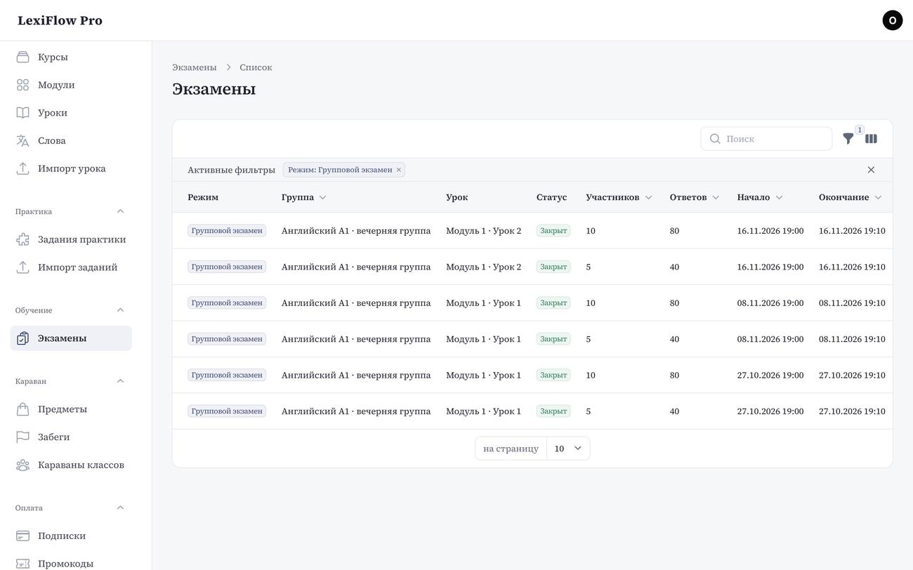
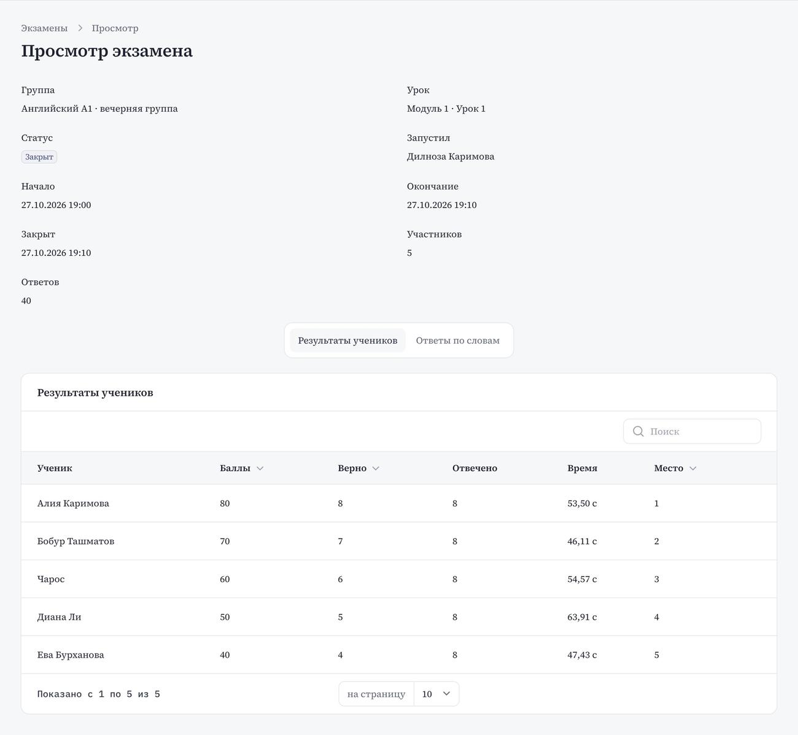

Раздел Обучение → Экзамены — журнал экзаменов: групповых (учитель запускает в Telegram-группе командой бота), пробных экзаменов учеников и тестов недели. Экзамены здесь только смотрят: создать, изменить или удалить экзамен в панели нельзя.
| Кто | Что видит |
|---|---|
| Администратор | все экзамены всех групп и личные пробные экзамены учеников |
| Учитель | только групповые экзамены своих групп |

| Колонка | Что значит |
|---|---|
| Режим | «Групповой экзамен», «Пробный экзамен» (ученик сам в приложении), «Тест недели» |
| Группа, Урок | где и по какому уроку («Модуль N · Урок M») шёл экзамен |
| Статус | «Открыт» — идёт; «Закрыт» — завершён, результаты окончательные |
| Участников, Ответов | сколько учеников отвечали и сколько всего ответов |
| Начало, Окончание | время запуска и плановое окончание |
Фильтры: режим, статус, группа.
Кнопка Просмотр открывает экзамен: кто запустил, когда начался и закрылся, число участников и ответов, и две вкладки.

Экзамены, срок которых прошёл, закрываются автоматически, а таблица лидеров уходит в чат группы. Если экзамен «завис» в статусе «Открыт» после окончания — сообщите техническому администратору: значит, не работает планировщик задач сервера.